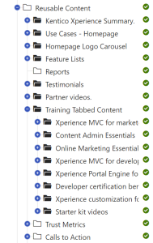
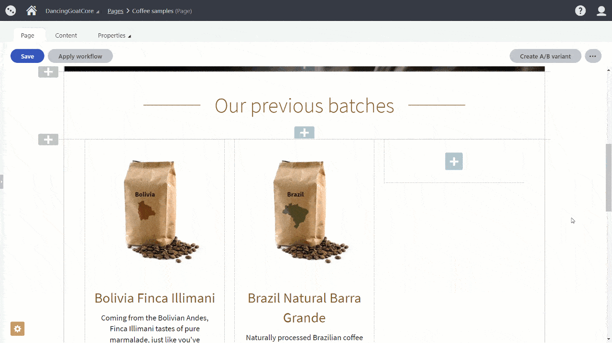
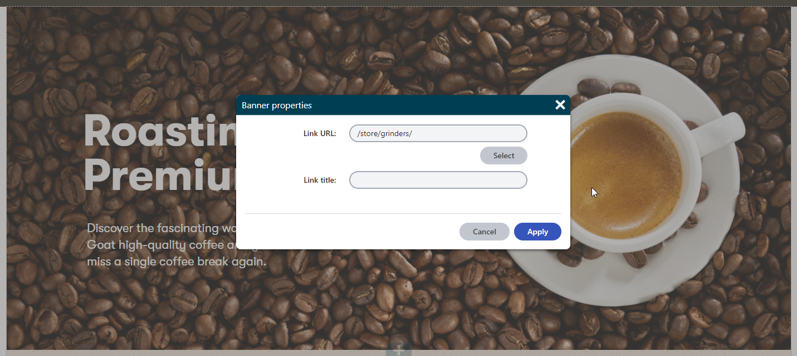
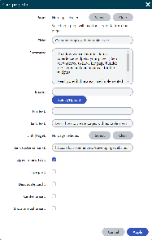

Designing content in Xperience
There are many ways how you can display content managed in Kentico Xperience on your website. The way you store and design content in Xperience directly affects how it will be displayed on the live site. You can design content using (combination of) the following Xperience features:
Page types
Page types define the behavior and structure of pages. Each page is of a specific page type. From the content design point of view, a page type defines a "fixed" template for each page without options for editors to adjust it.
Page types are mostly used for the semantic and structural categorization of pages. Each page type can have configured multiple page templates that allow editors to adjust the design of the pages.
Page templates
Page templates allow content editors to choose from predefined page layouts when creating new pages, instead of creating each page from scratch. Page templates provide greater control over the layout of pages to content editors, without the need to ask developers to modify the code of their website. Content editors can also save the widget content and configuration of specific pages into reusable custom templates.
Editors use the default templates prepared by developers to present content stored in a structured format or create their custom templates (created from default templates) to speed up building the website’s content.
Page Builder
The Page Builder is a user-friendly interface for page editing where non-technical users can manage content using configurable widgets prepared by the developers. Page builder content is often part of default page templates prepared by developers.
Page builder allows for creating the layout of whole pages or just sections of pages.
When creating a new page, content editors thus have several options, depending on what have developers enabled them to use. The most common workflows are:
Editors use the default templates prepared by developers to present content stored in a structured format.
Editors create and use their custom templates (from default templates) to speed up building the website’s content.
Editors use templates that allow for designing with the Page Builder. With the Page Builder, editors can use content stored in a structured format (which is the preferred way) or unstructured format, meaning they directly input data into Page Builder components.
Designing content using page templates
The design of every page in Xperience is based on a template (specified either in the specific page type or page template). The template provides content editors with greater control over their pages' layout. Developers prepare page templates and their properties in the code, and editors use them to create new or change the design of existing pages. Based on the project requirements, the templates can combine means to display structured content with predefined editable areas for Page Builder.
Find out more about developing and using page templates in our documentation.
Recommendations - Page templates
We recommend basing every page on a page template. This gives editors a way to save their page design as a custom template and build on it when they prepare any page customizations.
We also recommend creating a page template with editable properties for any website page with a URL/slug. The appropriate template properties give editors the means to adjust the design and layout of their pages. For example, developers can allow editors to configure the page layout (e.g. by selecting 75 x 25 or 25 x 70 column layout), change the page background, etc.
Designing content with Page Builder
Page Builder allows content editors to design parts of or whole pages wherever developers enable it (by defining editable areas). Editors can use two types of components to layout content in Page Builder: sections and widgets.
Sections serve as containers for widgets and allow you to define the layout of (a part of) a page.
Editors use widgets to populate the sections with content. Widgets can also provide the "design for your content". Developers can prepare widgets that will handle the content in three ways:
Widgets that only design structured content
Editors add these "structured-content widgets" into appropriate sections and select the content the widget will display. The content itself can be stored:
As child pages. The parent element contains the editable area(s) and allows to preview the content where editors add the widgets. The parent page itself can be, for example, a child to the page that represents the live site page with URL/slug.
[GIF - need to be coded] - example is required
As content items within a specific section in the content tree (called, e.g., “Reusable content").

Reusable section in the content tree (Xperience.io)Elsewhere in Xperience. The widgets then serve only as design containers for the content stored (and presented) somewhere else. For example, a widget that displays only several properties of the “Product” content type:

Widgets that store and design the content at the same time
With these "single-purpose content widgets", editors can either manage the content in a WYSIWYG manner using inline editors, use widget's properties and add content through widget's configuration dialog, or use a combination of both. The out-of-the-box Rich text widget is an example of a widget with advanced text styling capabilities. The Banner widget on our Dancing goat sample site shows both inline editors and widget configuration properties where all the input data are stored within one database field.

Widgets that combine both inline-editing and structured content
"Mixed-content widgets" allow editors to reuse structured content, e.g., by providing a selector to pick content from the content tree. At the same time, editors can use widget’s editable properties to either create widget’s content or provide additional information to structured data pulled from the content tree.
We recommend limiting the use of such widgets only to specific pages (zones) as content stored in these widgets might be more difficult to reuse in other channels.

Storing page builder content
All the content added directly to a page builder widget is stored in a single database field (CMS_Document -> DocumentPageBuilderWidgets), making it difficult for easy content reusability. On the other hand, widgets that only add design to structured content store only reference to the linked content (using the GUID value).
Sometimes, projects require WYSIWYG editing through widgets that also store the content. While specifying the project requirements, we recommend considering the implications of this design decision. Storing content directly in widgets has a great impact on content reusability or the project's upgradability.
Recommendations - Page builder
Combine structured content and widgets
To make the website’s content both reusable and future-proof, we recommend storing the content of the widgets using the structured content format. Developers should prepare widget properties that allow editors to layout (design) the content using WYSIWYG editing capabilities.
Based on the project requirements, the structured content of widgets can be stored in a dedicated section in the content tree or directly in a hierarchy under the page with the URL as child items.
Limit using widgets for single-purpose content
The content input directly into widgets is stored within one database field for the whole page. We recommend storing content in widgets only when the content is not going (or doesn’t have the potential) to be reused on the website. This kind of content can work on one-off pages, such as campaign landing pages.
Create sections with designing capabilities
We recommend creating sections with properties to let editors define how the content added via widgets will be presented. Some examples of section properties are: field for a URL parameter (Anchor tag) for deep linking, property to define the number of columns within the section, property to adjust margin or padding of widgets, adjusting the color of the section, etc.
Set limitations on editable areas
Use the editable area restrictions to ensure that editors can add only widgets or sections to specific areas. This will ensure page designs will not break (e.g., in different browsers), and it will create boundaries for data predictability (when considering future upgrades). Find out more about setting limitations on editable areas in Creating pages with editable areas ( LINK ).
Create custom widgets to add markup
Typically in the early stages of a live project, editors often need to add custom HTML markup or include scripts to embed some 3rd party applications. This requirement is often forgotten in project requirements.
We recommend creating custom widgets that allow editors to add scripts or HTML markup in the page's head or body. For example, editors might want to use an Anchor widget to enable linking to a section of the page or the Script widget to add JavaScript that runs a custom-built mortgage calculator.
In case editors expect these scripts or markup to be reused, developers can prepare a custom "Script" page type together with a custom widget. Content editors will then add the widget into the appropriate pages, reusing the scripts or markup.
Handle creating content types with nested content items dynamically
Storing data in structured content format and presenting this data through widgets can create extra work for content editors. If you decide to use this approach, we recommend creating customization for the page creation events: when an editor creates a content type that will store some of its content within its child pages, make sure these child pages are also automatically created.
For example, a "Card" section dynamically presents the data from the "Card" content type that editors create as child items. The "Card" content type stores the data in a structured format - one card is represented by one item. When an editor creates the card section, the system creates at least one child "Card" item for storing data for the first card.
You've learned about the different options of designing Xperience pages. On the next page , you'll learn about overall content considerations and general tips on website functionality that you might consider when planning your next project.